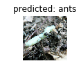

迁移学习教程
在这个教程中，我们将学习如何使用迁移学习训练网络。 更多有关迁移学习的内容可参阅cs231n notes
一些来自上述笔记的摘要，
在实践中，很少有人从头开始训练整个卷积网络（随机初始化），因为拥有足够大小的数据集的情况是相对罕见的。 相反，通常在非常大的数据集（例如ImageNet，其包含具有1000个类别的120万个图像）上预先训练ConvNet，然后使用ConvNet作为后续任务的初始化或固定特征提取器。
下面是两种主要的迁移学习场景：
- 卷积的微调: 这种情况下，不用随机初始化，而是从一个预训练网络（例如在 imagenet 1000 数据集上训练过的）开始初始化网络。 后面的训练照常进行。
- 卷积网络作为固定特征提取器: 这种方式下，冻结除了最后一个全连接层之外的所有网络的权重。 最后一个全连接层被替换为随机权重，且只有这一个层被训练。
1 2 3 4 5 6 7 8 9 10 11 12 13 14 15 16 17 18 | # License: BSD # Author: Sasank Chilamkurthy from __future__ import print_function, division import torch import torch.nn as nn import torch.optim as optim from torch.optim import lr_scheduler import numpy as np import torchvision from torchvision import datasets, models, transforms import matplotlib.pyplot as plt import time import os import copy plt.ion() # interactive mode |
加载数据
我们用 torchvision和torch.utils.data包加载数据
这里要解决的问题是训练一个模型用于对蚂蚁和蜜蜂进行分类。 蚂蚁和蜜蜂分别有到大约120个训练图线，75个验证图像。 按照一般标准，如果从头开始训练的话，这个数据集是很小的。 不过我们使用的是迁移学习，模型应该能够得到足够好的泛化结果。
这个数据集是imagenet的一个非常小的子集。
Note
从https://download.pytorch.org/tutorial/hymenoptera_data.zip下载数据，并解压到当前目录下的data子目录。
1 2 3 4 5 6 7 8 9 10 11 12 13 14 15 16 17 18 19 20 21 22 23 24 25 26 27 28 | # Data augmentation and normalization for training # Just normalization for validation data_transforms = { 'train': transforms.Compose([ transforms.RandomResizedCrop(224), transforms.RandomHorizontalFlip(), transforms.ToTensor(), transforms.Normalize([0.485, 0.456, 0.406], [0.229, 0.224, 0.225]) ]), 'val': transforms.Compose([ transforms.Resize(256), transforms.CenterCrop(224), transforms.ToTensor(), transforms.Normalize([0.485, 0.456, 0.406], [0.229, 0.224, 0.225]) ]), } data_dir = 'data/hymenoptera_data' image_datasets = {x: datasets.ImageFolder(os.path.join(data_dir, x), data_transforms[x]) for x in ['train', 'val']} dataloaders = {x: torch.utils.data.DataLoader(image_datasets[x], batch_size=4, shuffle=True, num_workers=4) for x in ['train', 'val']} dataset_sizes = {x: len(image_datasets[x]) for x in ['train', 'val']} class_names = image_datasets['train'].classes device = torch.device("cuda:0" if torch.cuda.is_available() else "cpu") |
显示少量图像
我们显示少量图像，以便理解数据增强。
1 2 3 4 5 6 7 8 9 10 11 12 13 14 15 16 17 18 19 20 | def imshow(inp, title=None): """Imshow for Tensor.""" inp = inp.numpy().transpose((1, 2, 0)) mean = np.array([0.485, 0.456, 0.406]) std = np.array([0.229, 0.224, 0.225]) inp = std * inp + mean inp = np.clip(inp, 0, 1) plt.imshow(inp) if title is not None: plt.title(title) plt.pause(0.001) # pause a bit so that plots are updated # Get a batch of training data inputs, classes = next(iter(dataloaders['train'])) # Make a grid from batch out = torchvision.utils.make_grid(inputs) imshow(out, title=[class_names[x] for x in classes]) |
训练模型
现在，我们编写用于训练模型的通用函数。在函数中，我们需要：
- 安排学习率
- 保存最好的模型
下面代码中的scheduler参数是来自torch.optim.lr_scheduler的 LR scheduler 对象。
1 2 3 4 5 6 7 8 9 10 11 12 13 14 15 16 17 18 19 20 21 22 23 24 25 26 27 28 29 30 31 32 33 34 35 36 37 38 39 40 41 42 43 44 45 46 47 48 49 50 51 52 53 54 55 56 57 58 59 60 61 62 63 64 65 66 | def train_model(model, criterion, optimizer, scheduler, num_epochs=25): since = time.time() best_model_wts = copy.deepcopy(model.state_dict()) best_acc = 0.0 for epoch in range(num_epochs): print('Epoch {}/{}'.format(epoch, num_epochs - 1)) print('-' * 10) # Each epoch has a training and validation phase for phase in ['train', 'val']: if phase == 'train': scheduler.step() model.train() # Set model to training mode else: model.eval() # Set model to evaluate mode running_loss = 0.0 running_corrects = 0 # Iterate over data. for inputs, labels in dataloaders[phase]: inputs = inputs.to(device) labels = labels.to(device) # zero the parameter gradients optimizer.zero_grad() # forward # track history if only in train with torch.set_grad_enabled(phase == 'train'): outputs = model(inputs) _, preds = torch.max(outputs, 1) loss = criterion(outputs, labels) # backward + optimize only if in training phase if phase == 'train': loss.backward() optimizer.step() # statistics running_loss += loss.item() * inputs.size(0) running_corrects += torch.sum(preds == labels.data) epoch_loss = running_loss / dataset_sizes[phase] epoch_acc = running_corrects.double() / dataset_sizes[phase] print('{} Loss: {:.4f} Acc: {:.4f}'.format( phase, epoch_loss, epoch_acc)) # deep copy the model if phase == 'val' and epoch_acc > best_acc: best_acc = epoch_acc best_model_wts = copy.deepcopy(model.state_dict()) print() time_elapsed = time.time() - since print('Training complete in {:.0f}m {:.0f}s'.format( time_elapsed // 60, time_elapsed % 60)) print('Best val Acc: {:4f}'.format(best_acc)) # load best model weights model.load_state_dict(best_model_wts) return model |
显示模型的预测结果
用于显示少量图像预测结果的通用函数
1 2 3 4 5 6 7 8 9 10 11 12 13 14 15 16 17 18 19 20 21 22 23 24 25 | def visualize_model(model, num_images=6): was_training = model.training model.eval() images_so_far = 0 fig = plt.figure() with torch.no_grad(): for i, (inputs, labels) in enumerate(dataloaders['val']): inputs = inputs.to(device) labels = labels.to(device) outputs = model(inputs) _, preds = torch.max(outputs, 1) for j in range(inputs.size()[0]): images_so_far += 1 ax = plt.subplot(num_images//2, 2, images_so_far) ax.axis('off') ax.set_title('predicted: {}'.format(class_names[preds[j]])) imshow(inputs.cpu().data[j]) if images_so_far == num_images: model.train(mode=was_training) return model.train(mode=was_training) |
微调卷积网络
加载预训练模型，并重置最后的全连接层。
1 2 3 4 5 6 7 8 9 10 11 12 13 | model_ft = models.resnet18(pretrained=True) num_ftrs = model_ft.fc.in_features model_ft.fc = nn.Linear(num_ftrs, 2) model_ft = model_ft.to(device) criterion = nn.CrossEntropyLoss() # Observe that all parameters are being optimized optimizer_ft = optim.SGD(model_ft.parameters(), lr=0.001, momentum=0.9) # Decay LR by a factor of 0.1 every 7 epochs exp_lr_scheduler = lr_scheduler.StepLR(optimizer_ft, step_size=7, gamma=0.1) |
训练与评估
在CPU上大约需要15-25分钟，在GPU上需要大约不到一分钟。
1 2 | model_ft = train_model(model_ft, criterion, optimizer_ft, exp_lr_scheduler, num_epochs=25) |
1 2 3 4 5 6 7 8 9 10 11 12 13 14 15 16 17 18 19 20 21 22 23 24 25 26 27 28 29 30 31 32 33 34 35 36 37 38 39 40 41 42 43 44 45 46 47 48 49 50 51 52 53 54 55 56 57 58 59 60 61 62 63 64 65 66 67 68 69 70 71 72 73 74 75 76 77 78 79 80 81 82 83 84 85 86 87 88 89 90 91 92 93 94 95 96 97 98 99 100 101 102 103 104 105 106 107 108 109 110 111 112 113 114 115 116 117 118 119 120 121 122 123 124 125 126 127 | Epoch 0/24 ---------- train Loss: 0.6645 Acc: 0.6803 val Loss: 0.9809 Acc: 0.6340 Epoch 1/24 ---------- train Loss: 0.5326 Acc: 0.8115 val Loss: 0.1608 Acc: 0.9542 Epoch 2/24 ---------- train Loss: 0.4786 Acc: 0.8115 val Loss: 0.2549 Acc: 0.9281 Epoch 3/24 ---------- train Loss: 0.4241 Acc: 0.8361 val Loss: 0.2157 Acc: 0.9216 Epoch 4/24 ---------- train Loss: 0.4840 Acc: 0.8115 val Loss: 0.2490 Acc: 0.8954 Epoch 5/24 ---------- train Loss: 0.3529 Acc: 0.8607 val Loss: 0.3553 Acc: 0.8889 Epoch 6/24 ---------- train Loss: 0.5773 Acc: 0.7623 val Loss: 0.2592 Acc: 0.9150 Epoch 7/24 ---------- train Loss: 0.4033 Acc: 0.8279 val Loss: 0.2284 Acc: 0.9216 Epoch 8/24 ---------- train Loss: 0.3246 Acc: 0.8607 val Loss: 0.2262 Acc: 0.9150 Epoch 9/24 ---------- train Loss: 0.2883 Acc: 0.8975 val Loss: 0.2000 Acc: 0.9281 Epoch 10/24 ---------- train Loss: 0.2666 Acc: 0.9057 val Loss: 0.1866 Acc: 0.9412 Epoch 11/24 ---------- train Loss: 0.3363 Acc: 0.8402 val Loss: 0.1922 Acc: 0.9412 Epoch 12/24 ---------- train Loss: 0.2246 Acc: 0.8934 val Loss: 0.1951 Acc: 0.9346 Epoch 13/24 ---------- train Loss: 0.2927 Acc: 0.8566 val Loss: 0.2221 Acc: 0.9085 Epoch 14/24 ---------- train Loss: 0.3680 Acc: 0.8484 val Loss: 0.1812 Acc: 0.9281 Epoch 15/24 ---------- train Loss: 0.3115 Acc: 0.8730 val Loss: 0.1775 Acc: 0.9346 Epoch 16/24 ---------- train Loss: 0.3047 Acc: 0.8770 val Loss: 0.1900 Acc: 0.9281 Epoch 17/24 ---------- train Loss: 0.3971 Acc: 0.8402 val Loss: 0.1842 Acc: 0.9216 Epoch 18/24 ---------- train Loss: 0.3200 Acc: 0.8770 val Loss: 0.1882 Acc: 0.9346 Epoch 19/24 ---------- train Loss: 0.3006 Acc: 0.8525 val Loss: 0.1814 Acc: 0.9477 Epoch 20/24 ---------- train Loss: 0.3168 Acc: 0.8525 val Loss: 0.1763 Acc: 0.9346 Epoch 21/24 ---------- train Loss: 0.2938 Acc: 0.8689 val Loss: 0.1797 Acc: 0.9346 Epoch 22/24 ---------- train Loss: 0.2430 Acc: 0.8975 val Loss: 0.1756 Acc: 0.9346 Epoch 23/24 ---------- train Loss: 0.3436 Acc: 0.8320 val Loss: 0.1730 Acc: 0.9412 Epoch 24/24 ---------- train Loss: 0.2832 Acc: 0.8689 val Loss: 0.1683 Acc: 0.9412 Training complete in 1m 12s Best val Acc: 0.954248 |
1 | visualize_model(model_ft) |

卷积网络作为固定特征提取器
要冻结出最后一层之外的整个网络，我们得设置requires_grad == False来冻结参数，这样一来，backward()就不再计算梯度。
阅读这个文档可以获得更多信息：https://pytorch.org/docs/notes/autograd.html#excluding-subgraphs-from-backward。.
1 2 3 4 5 6 7 8 9 10 11 12 13 14 15 16 17 18 | model_conv = torchvision.models.resnet18(pretrained=True) for param in model_conv.parameters(): param.requires_grad = False # Parameters of newly constructed modules have requires_grad=True by default num_ftrs = model_conv.fc.in_features model_conv.fc = nn.Linear(num_ftrs, 2) model_conv = model_conv.to(device) criterion = nn.CrossEntropyLoss() # Observe that only parameters of final layer are being optimized as # opposed to before. optimizer_conv = optim.SGD(model_conv.fc.parameters(), lr=0.001, momentum=0.9) # Decay LR by a factor of 0.1 every 7 epochs exp_lr_scheduler = lr_scheduler.StepLR(optimizer_conv, step_size=7, gamma=0.1) |
训练与评估
在CPU上需要的时间大约是上个场景的一半，这是因为不需要为大多数网络计算梯度。不过，前向还是要计算的。
1 2 | model_conv = train_model(model_conv, criterion, optimizer_conv, exp_lr_scheduler, num_epochs=25) |
1 2 3 4 5 6 7 8 9 10 11 12 13 14 15 16 17 18 19 20 21 22 23 24 25 26 27 28 29 30 31 32 33 34 35 36 37 38 39 40 41 42 43 44 45 46 47 48 49 50 51 52 53 54 55 56 57 58 59 60 61 62 63 64 65 66 67 68 69 70 71 72 73 74 75 76 77 78 79 80 81 82 83 84 85 86 87 88 89 90 91 92 93 94 95 96 97 98 99 100 101 102 103 104 105 106 107 108 109 110 111 112 113 114 115 116 117 118 119 120 121 122 123 124 125 126 127 | Epoch 0/24 ---------- train Loss: 0.6012 Acc: 0.6926 val Loss: 0.2920 Acc: 0.8954 Epoch 1/24 ---------- train Loss: 0.5843 Acc: 0.7500 val Loss: 0.1724 Acc: 0.9477 Epoch 2/24 ---------- train Loss: 0.5340 Acc: 0.7500 val Loss: 0.1489 Acc: 0.9673 Epoch 3/24 ---------- train Loss: 0.4718 Acc: 0.8074 val Loss: 0.1579 Acc: 0.9673 Epoch 4/24 ---------- train Loss: 0.5471 Acc: 0.7746 val Loss: 0.1791 Acc: 0.9542 Epoch 5/24 ---------- train Loss: 0.6842 Acc: 0.7213 val Loss: 0.4588 Acc: 0.8431 Epoch 6/24 ---------- train Loss: 0.5558 Acc: 0.7664 val Loss: 0.1744 Acc: 0.9673 Epoch 7/24 ---------- train Loss: 0.2958 Acc: 0.8770 val Loss: 0.1850 Acc: 0.9542 Epoch 8/24 ---------- train Loss: 0.3071 Acc: 0.8607 val Loss: 0.1790 Acc: 0.9542 Epoch 9/24 ---------- train Loss: 0.4278 Acc: 0.8320 val Loss: 0.1905 Acc: 0.9412 Epoch 10/24 ---------- train Loss: 0.2871 Acc: 0.8934 val Loss: 0.1990 Acc: 0.9412 Epoch 11/24 ---------- train Loss: 0.3389 Acc: 0.8566 val Loss: 0.1733 Acc: 0.9608 Epoch 12/24 ---------- train Loss: 0.2730 Acc: 0.8730 val Loss: 0.1759 Acc: 0.9542 Epoch 13/24 ---------- train Loss: 0.3903 Acc: 0.8279 val Loss: 0.1925 Acc: 0.9477 Epoch 14/24 ---------- train Loss: 0.3229 Acc: 0.8443 val Loss: 0.1836 Acc: 0.9542 Epoch 15/24 ---------- train Loss: 0.2893 Acc: 0.8730 val Loss: 0.1721 Acc: 0.9542 Epoch 16/24 ---------- train Loss: 0.3238 Acc: 0.8689 val Loss: 0.2043 Acc: 0.9412 Epoch 17/24 ---------- train Loss: 0.3544 Acc: 0.8361 val Loss: 0.1739 Acc: 0.9673 Epoch 18/24 ---------- train Loss: 0.2911 Acc: 0.8770 val Loss: 0.1906 Acc: 0.9346 Epoch 19/24 ---------- train Loss: 0.3854 Acc: 0.8279 val Loss: 0.1992 Acc: 0.9477 Epoch 20/24 ---------- train Loss: 0.3465 Acc: 0.8238 val Loss: 0.2030 Acc: 0.9346 Epoch 21/24 ---------- train Loss: 0.3416 Acc: 0.8402 val Loss: 0.1801 Acc: 0.9477 Epoch 22/24 ---------- train Loss: 0.3997 Acc: 0.8033 val Loss: 0.1990 Acc: 0.9477 Epoch 23/24 ---------- train Loss: 0.2379 Acc: 0.9139 val Loss: 0.1711 Acc: 0.9608 Epoch 24/24 ---------- train Loss: 0.3448 Acc: 0.8484 val Loss: 0.1732 Acc: 0.9608 Training complete in 0m 45s Best val Acc: 0.967320 |
1 2 3 4 | visualize_model(model_conv) plt.ioff() plt.show() |